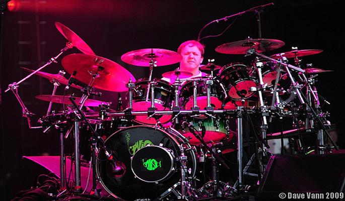
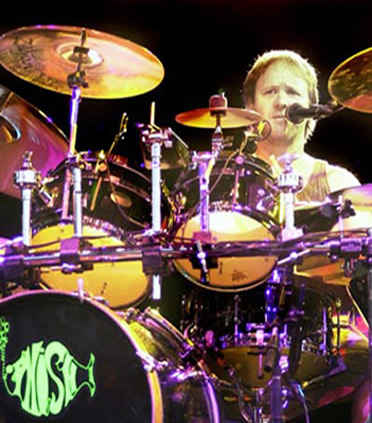

The Man Behind the Beat- Jon Fishman
Trey Anastasio
Mike Gordon
Page McConnell
Jon Fishman
| Home | Band Members | History | Popular Discography | Live |
The Man Behind the Beat- Jon Fishman
Trey Anastasio
Mike Gordon
Page McConnell
Jon Fishman
Jon Fishman (born February 19, 1965) is an American drummer best known for his work with the band Phish. He is credited with co-writing 19 Phish originals, 8 of them as a solo credit.
Fishman was born in Philadelphia, Pennsylvania. He was then adopted, and grew up in Syracuse, New York with a Jewish family. Fishman had a passion for the drums from an early age, and emulated John Bonham, the drummer for Led Zeppelin, Bill Bruford of Yes, and Keith Moon of The Who. He went to Jamesville-Dewitt High School in a suburb of Syracuse, and after graduation in 1983, he attended the University of Vermont for one year, to study Engineering with band-mate Mike Gordon where they co-founded Phish. Being an engineer was not his true calling, and he transferred with guitarist Trey Anastasio to Goddard College, where he wrote his senior study on "A Self-Teaching Guide to Drumming in Retrospect." As of 2012, he lives in Vermont.

Jon uses a variety of drums and cymbals on his kit; brands such as Noble & Cooley, Gretsch, Ayotte, Zildjian, Sabian, Paiste, and Wuhan. He also uses Remo drum heads, and Vic Firth drum sticks. His setup consists of: 22x14 Gretsch bass drum (1958–63) re-wrapped by Precision Drum Company. 6x6 Noble & Cooley tom (in Black Finish) 8x7 Noble & Cooley tom 10x7 Noble & Cooley tom 12x8 Noble & Cooley tom 14x12 Noble & Cooley Floor Tom 16x14 Noble & Cooley Floor Tom 14x6.5 Ayotte 18-Ply Maple Snare (or 14x6.5 Precision 21-Ply Maple Snare w/ custom 3D phish logo).